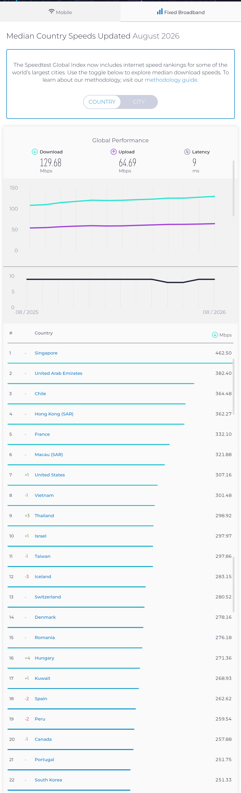
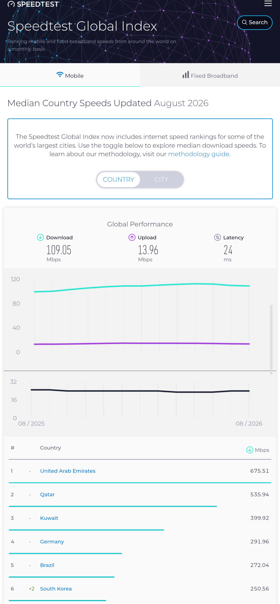

개드립간글에 자료랍시고 퍼온 영상안에 순위에도 안보인다며
인터넷느리네 하는 반응이 대부분임
근데 이자료의 사실있습

무선이아니라 유선인터넷 속도자료임
순위밖에 밀려나갔다고해서 느린게 절대아님
22위 한국은 현재 인터넷 평균 속도가 251.33mbps임
인터넷 쓰는데 유선은 100mbps수준만 안정적으로 유지되도
쓰는데는 아무런 지장없는 속도인거
4k 60fps영상도 유선 35~45mbps 수준이면 그만임
걍 공유기나 광모뎀 qos직접 속도제한걸어보면 어디까지 유지되면 그만인가? 돌려보면 답이나옴.
즉 비대칭아닌한 대칭형 광랜인터넷 쓰는 대부분에게는 해당조차안될만큼 쓰는데는 전혀지장없는 속도임은 분명함
저기위에 순위에 이나라가 10위올라가고 속도딸딸이치고싶다?
어려울거없다 그냥 돈을더내고 기가인터넷개통하면 됨.
인터넷 싼거써서 그래
보급률이 딸려서 기가인터넷 개통 못해서가아님
안그래도 여기처럼 인터넷회선 어지간한깡촌네에도 다깔려있지.
어차피 속도평균떨궈먹는 대부분이유가 보급률도높고 사용자수
측정자료도많이쏠리고 100mbps인터넷 에서
대부분 싼인터넷 요금제 써버리는 이유가 주요로 차지함
그냥 사용자개인측정이 떨꿔먹는게 맞는거

요즘 통신사속도가 불만이네 하는 영역부분은 저거임
사실 저러고도 6위임. 매번 저순위 수준에서 꾸준히 유지해옴
무선 통신사 무선인터넷망속도 측면에서 볼땐 딱히
한국이 느린편조차도 아님.
저위에 3위안에 주요 중동 국가들 보급률이니 인터넷망 생각 해보면 더더욱 순위뻥튀기에가까운자료들이지
적어도 해외여행 한번이라도 나가봤으면 이나라 인터넷 느리다는말은
진짜 그말 입쏙들어감만큼 개소리인거 바로 알수있습
다른나라가면 진짜로 무선망 커버리지 한국은 선녀수준임
아니진짜로...
근데 이글올라오고도 저런렉카선동글 앞으로 얼마나 더 올라올까?
내가 통신사 쉴드치는게아니라서 통신사가 비싼건비싼거고
무선통신속도가 구리거나 , 유선 서비스제공이 구린건 절대아니라 하는말인거.
저거 순위표자료마저도 사실 신뢰성 문제큼
매달마다 국가들순위 그냥 유선은 왔다갔다해서 저거조차도 자료만따지기엔 문제많음.
국가들마다 편차가 매달마다 15위 씩이나 왔다갔다하는거